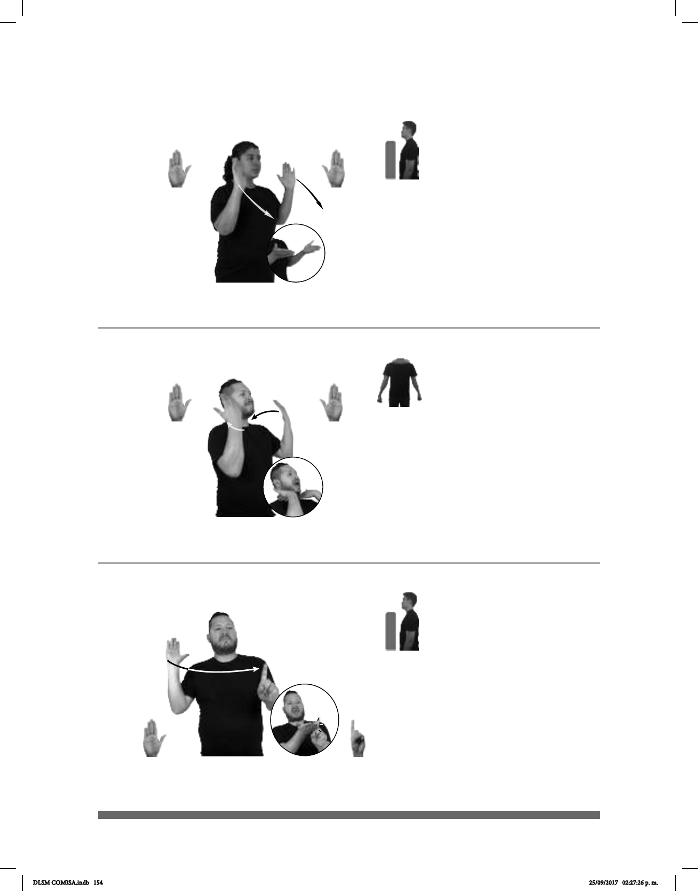

154
(B-P 132)
pro-TÚ YA CONVENCER PARA IR PASEAR
Convéncelo para ir a pasear.
Seña: SB
MD B-P.2, MB 1.1
MD la palma inicia hacia
afuera y termina hacia arriba. MB
palma hacia afuera.
MD y MB a la altura del
pecho.
La MD golpea a la MB
en línea recta.
Boca abierta.
v. tr. Conseguir con razones
o argumentos que una persona haga una
cosa o cambie de parecer.
Seña: SS
B-P.2
Las palmas inician hacia
afuera y terminan hacia abajo.
Del pecho al cuello.
Los antebrazos se
mueven formando un arco hacia
enfrente mientras giran y cambian la
orientación de las palmas.
Boca abierta.
v. tr. Conseguir con razones
o argumentos que una persona haga una
cosa o cambie de parecer.
(B-P 130)
pro-YO YA CONVENCER pos-MI AMIGO IR FIESTA
(B-P 131)
___muy
pos-MI MAESTRO+MUJER DIFÍCIL CONVENCER
Es muy difícil convencer a mi maestra.
Seña: SS
B-P.2
Las palmas hacia adentro
y terminan hacia abajo.
MD y MB a la altura del
cuello.
Las manos golpean el
cuello.
Boca abierta.
v. tr. Conseguir con razones
o argumentos que una persona haga una
cosa o cambie de parecer.
DLSM COMISA.indb 154 25/09/2017 02:27:26 p. m.